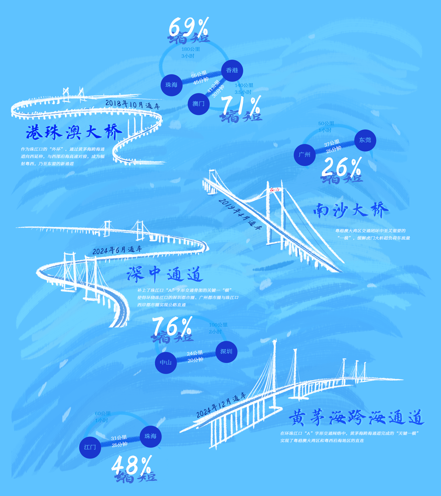
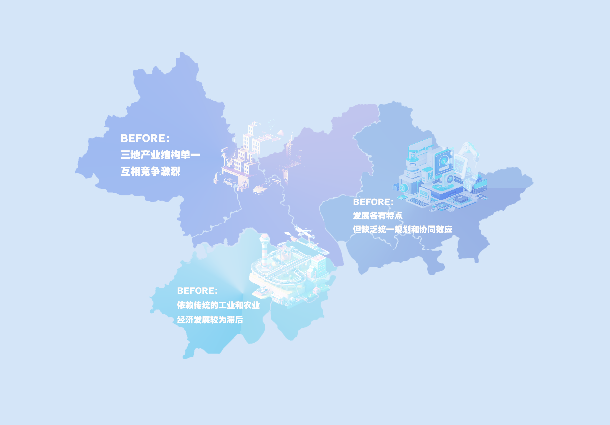
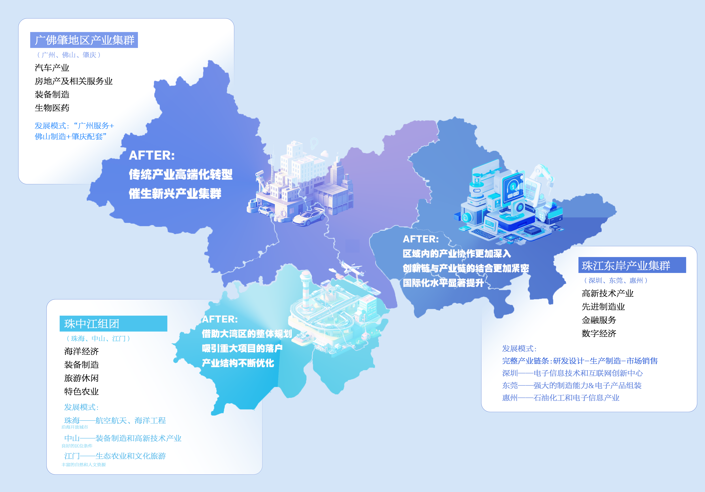
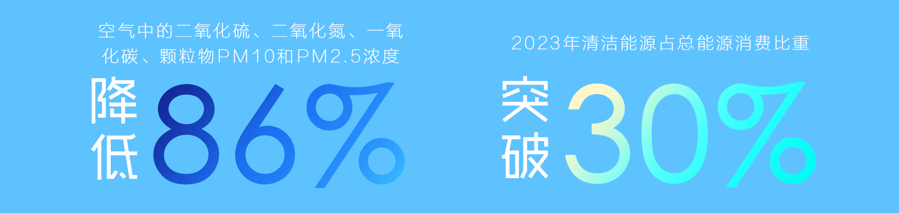

功成几何
距离在缩短：更紧密的湾区联系
基础设施加强：交通与生活距离"变小"了
随着粤港澳大湾区基础设施建设的加速，区域交通连通性大幅提升，物理距离逐渐缩短。自2018年以来，广东省铁路网络从28条增至41条，里程由885公里增至1383公里，形成了包括国家铁路、城际铁路和城市轨道交通在内的三级网络，现有及在建线路超过5400公里，未来规划将突破1万公里。
在跨江跨海通道建设方面，多个重要大桥已投入使用，包括2018年通车的港珠澳大桥、2019年通车的南沙大桥、2024年通车的深中通道和黄茅海跨海通道。港珠澳大桥缩短珠海至香港的距离69%；南沙大桥将广州到东莞的车程缩短26%；深中通道将中山到深圳的时间缩短76%；黄茅海跨海通道使江门至珠海的通行时间缩短48%。大湾区"一小时生活圈"加速形成。

科技与经济建设加强：产业协同与创新距离"变小"了
从2018年到2022年，粤港澳大湾区在科技与经济建设方面显著加强，产业协同与创新距离不断缩小。
科研投入从2018年的2248亿元增长到2022年的4269亿元，显示出大湾区对科技创新的持续重视和支持。同时，专利授权量也从2018年的38万余件增加到2022年的76万余件，这一增长不仅反映了创新活动的活跃度，也表明了大湾区在知识产权保护和利用方面的进步。
粤港澳大湾区的产业链深度合作和企业协同发展，正推动区域经济联系日益紧密。大湾区形成了三大产业集群：珠江东岸以深圳、东莞为核心，依托高新技术和先进制造业，推动科技创新；广佛肇地区利用传统产业优势，向高附加值产业转型，展现产业升级潜力；珠中江组团通过交通枢纽优化产业布局，推动珠海、中山等地的产业集聚。这种跨区域协作促进了资源高效流动，并为区域经济一体化提供了重要支撑。
鼠标移动至图片上方查看产业变迁


科技创新驱动为产业升级和企业协作提供了强劲动力。广东省国家级高新技术企业数量从2018年的4.5万家增至2023年的7.5万家，连续8年全国领先，这推动了产业链上下游的全面协作。同时，独角兽企业数量从2019年的35家增至70家，涵盖电子信息、智能家电、绿色石化等多个领域。这些企业不仅凸显了大湾区在全球创新中的重要地位，也促进了区域产业链的深度协作，助力"8372"战略性产业集群的高质量发展。
环境保护协作加强：生态距离"变小"了
随着粤港澳大湾区的快速发展，环境保护协作显著加强，生态距离不断"变小"。绿色基础设施建设成为重要方向，节能环保建筑和绿色交通网络的普及提升了区域的可持续发展水平。
例如，珠海和深圳等城市积极推动绿色建筑和能源系统的建设，广州市的绿色出行指数持续增长。此外，大湾区还加强了跨境环境治理合作，珠江水系的污染治理跨越了广东和澳门的行政区划，多个地方政府和企业联手开展跨境水污染治理项目。2023年，粤港澳珠江三角洲区域空气监测网络显示，空气中的二氧化硫、二氧化氮、一氧化碳、颗粒物PM10和PM2.5浓度均显著下降，浓度年均值从高峰水平下降最高至86%。同时，大湾区在推动绿色能源应用方面也取得了积极进展，2023年清洁能源占总能源消费比重已突破30%。这些举措不仅提升了区域生态环境质量，也为人与自然的和谐共生奠定了坚实基础。

幸福在增大：更美好的湾区生活
随着粤港澳大湾区建设的深入推进，跨境医疗、教育及职业资格互认等领域的一系列政策逐步落地，极大地便利了湾区人民的生活。
教育协作加强：湾区学习更幸福
在教育领域，一幅教育资源共享、人才协同培养的美好画卷在大湾区徐徐展开。在高等教育领域，近年来，香港、澳门多所高校率先在大湾区设立分校或合作办学机构，深圳大学、中山大学等内地大学也把研究机构开到港澳地区。除了高等教育，粤港澳大湾区基础教育领域的合作也在深化。广州、深圳等城市优质教育资源的开放，吸引了大量港澳学生前来求学。仅2023年，便有超过8万名港澳学生在广东中小学就读。
社会保障加强：湾区保障更全面
在医疗和社会保障方面，跨境对接的深化为港澳居民提供了更加全面的保障。据统计，已有超过30万港澳居民参加了广东的养老、失业、工伤等社会保险，享受与内地居民同等的医疗保障和社会福利。在跨境医保方面，广东与香港、澳门的医疗机构合作不断加强，港澳居民在内地就医的报销比例和覆盖面显著提高。
此外，大湾区还在养老保障方面推出了多项政策，确保港澳居民在内地能够享受更好的养老服务。2023年，超过20万港澳居民在广东享受到了养老服务，这为大湾区内的跨境生活提供了更加坚实的保障，进一步增强了居民的幸福感。
食品保障加强：湾区饮食更安全
在食品保障方面，粤港澳大湾区的"菜篮子"建设也为居民提供了更多的安全、绿色食品。根据2019年广州市发布的《粤港澳大湾区"菜篮子"建设实施方案》，广州已在全国认定了2422个"菜篮子"生产基地，涵盖蔬菜、水果、肉类、水产等多个领域，为大湾区居民提供了高质量的新鲜食材。尤其是"绿色通道"项目的实施，大大提升了农产品的流通效率和新鲜度，确保了食品的安全性和营养丰富性。
随着这些政策的实施，医疗、住房、教育等民生领域的服务质量也显著提高。港澳青年更积极融入大湾区，仅在广东工作的港澳青年人数已突破20万。通过不断完善政策机制，粤港澳大湾区为居民创造了更加便捷、宜居的跨境生活环境，也为区域一体化发展注入了新的动力，人民的幸福感与归属感不断增强。
认同在加深：更团结的"大湾区人"
随着粤港澳大湾区的紧密交融，湾区各城市的越来越多的人认同湾区的发展规划，更认同自己是一个"大湾区人"。根据香港广东青年发展总会的调查，香港青年对前往大湾区内地城市发展的看法整体愈发积极。
除了经济发展上的认同外，文化交流也变得更为频繁。除了自2021年开办的《"湾区升明月"大湾区电影音乐晚会》外，越来越多带有湾区元素的节目出现在大众视野中。《声生不息》是由芒果TV和湖南卫视联合制作的音乐竞唱交流节目，最新一季的《声生不息·大湾区季》首日热度9853.83，突破前几季记录，成为连接人心、引领潮流的音乐新标杆之作。
此外，更多人也在用自己的言行表达对自己"大湾区人"身份的认同。

2023年3月7日上午，在全国政协十四届一次会议第二场"委员通道"上，来自澳门的全国政协委员何超琼说：“有人说我是澳门人，有人说我是香港人，但我会说我是大湾区人。”
在《声生不息·大湾区季》泪洒现场，高唱中国人的嘉宾"肥妈"玛丽亚·科尔德罗1954年出生于澳门，9岁移居香港，直到45岁时才有机会堂堂正正地说出“我是中国人，我是中国澳门人！”
她对于大湾区有着非常深厚的感情“大湾区是很大的发展机会，我的选择是对的！”她如是说。
从"香港人"、"澳门人"到"大湾区人"，措辞之变所折射的，是深层次的身份认同之变。更融合的大湾区正在实现，更团结的"大湾区人"也在携手走向未来！